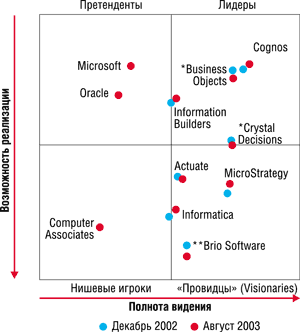
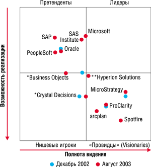

Обзор подготовлен Наталией Елмановой.
Сегодня почти любое предприятие обладает немалым объемом накопленных данных. Корпоративная база данных современного предприятия обычно содержит набор таблиц, хранящих записи о тех или иных фактах или объектах. Совокупность большого количества таких записей, накопленных за несколько лет, может стать источником дополнительной информации, а именно сведений о закономерностях, тенденциях или взаимозависимостях между какими-либо данными. Примеры подобной информации - сведения о том, как зависят продажи определенного товара от дня недели, времени суток, региона; какая категория клиентов чаще всего вовремя не отдает предоставленный кредит, и т. д. Именно поэтому в состав современных бизнес-решений обычно включаются не только средства ввода и редактирования данных, но и инструменты их анализа и представления в удобном для восприятия виде, позволяющем принимать обоснованные бизнес-решения. Эти инструменты сейчас называют общим термином - средства Business Intelligence (BI).
К современным средствам BI относят генераторы отчетов, средства аналитической обработки данных, средства разработки BI-решений и их составные части (BI Platforms) и так называемые Enterprise BI Suites - интегрированные наборы аналитических приложений.
Средства создания отчетов
Отчет - это документ, содержимое которого динамически формируется на основе информации, содержащейся в базе данных. В настоящее время на рынке ПО представлено несколько продуктов, относящихся к категории средств подготовки отчетов, причем на основе многих из них можно создавать собственные решения. Как правило, такие средства поддерживают все популярные механизмы доступа к данным, совместимы с широким спектром СУБД, содержат средства деловой графики, интегрируются с офисными приложениями, позволяют публиковать отчеты в Интернете.
Безусловный лидер рынка средств создания отчетов - продукт Crystal Reports (с декабря 2003 г. он принадлежит компании Business Objects). Этот продукт поставляется как отдельно, так и в составе различных пакетов других производителей, начиная со средств разработки приложений и заканчивая геоинформационными системами. Кроме того, компания Crystal Decisions создала ряд серверных продуктов, таких, как Report Application Server, позволяющих обеспечивать отчетами крупные предприятия или их подразделения. Помимо Crystal Reports, имеется еще несколько менее популярных продуктов подобного класса (например, Rave Reports компании Nevrona), а также генераторы отчетов, содержащие библиотеки классов или компонентов, которые предназначены для использования внутри приложений.
Нередко в качестве средств создания отчетов применяются офисные приложения (в частности, Microsoft Office). Эти продукты обычно обладают развитыми средствами управления печатью документов, нередко обеспечивают доступ к данным с помощью какого-либо из универсальных механизмов доступа.
Отметим, что создание отчетов - не единственный способ извлечь пользу из данных, накопленных в процессе работы. Принятие управленческих решений, особенно в области стратегического планирования, нередко требует дополнительной аналитической обработки данных и, возможно, создания аналитических отчетов на основе результатов этой обработки.
OLAP-средства
Информационные системы масштаба предприятия, как правило, содержат приложения, называемые системами поддержки принятия решений. Они применяются менеджерами высшего звена и предназначены для комплексного многомерного анализа данных. В таких приложениях обычно имеются средства для того, чтобы предоставить пользователю агрегатные данные для различных выборок из исходного набора в удобном для восприятия и анализа виде. Чаще всего такие агрегатные функции образуют многомерный набор данных, называемый кубом, оси которого содержат параметры, а ячейки - зависящие от них агрегатные данные. Вдоль каждой оси данные могут быть организованы в иерархии, отражающие различные уровни их детализации.
Технология комплексного многомерного анализа данных получила название OLAP (On-Line Analytical Processing). Концепция OLAP была описана в 1993 г. Э. Ф. Коддом, известным исследователем баз данных и автором реляционной модели данных. В настоящее время поддержка OLAP реализована во многих СУБД и иных инструментах, будучи оптимальным решением для большого класса приложений, где пользователи сталкиваются с многомерными данными.
Отметим, что многомерный анализ данных может осуществляться как в клиентском приложении, так и на сервере баз данных. Все производители ведущих серверных СУБД (IBM, Informix, Microsoft, Oracle, Sybase) выпускают серверные средства для такого анализа, а в последнее время стало популярным поставлять подобные средства в составе СУБД - эту традицию создала компания Microsoft, включив несколько лет назад OLAP-средства в состав Microsoft SQL Server 7.0.
OLAP-кубы: немного технических деталейЧто представляют собой OLAP-данные? В качестве ответа на этот вопрос рассмотрим простейший пример. Предположим, в корпоративной базе данных некоего предприятия имеется таблица, содержащая сведения о продажах товаров или услуг, и данные из нее можно получить с помощью следующего запроса:
SELECT Country, City, CustomerName, Salesperson, OrderDate, CategoryName, ProductName, ShipperName, ExtendedPrice FROM Invoices
Предположим, нас интересует, какова суммарная стоимость заказов, сделанных клиентами из разных стран. В этом случае уместно выполнить запрос вида
SELECT Country, SUM (ExtendedPrice) FROM Invoices GROUP BY Country
и получить одномерный набор агрегатных данных (табл. 1). Таблица 1. Одномерный набор агрегатных данных
Если же мы хотим узнать, какова суммарная стоимость заказов, сделанных клиентами из разных стран и доставленных разными службами доставки, мы должны выполнить запрос, содержащий два параметра в предложении GROUP BY:
SELECT Country, ShipperName, SUM (ExtendedPrice) FROM Invoices GROUP BY COUNTRY, ShipperName
На основании результатов этого запроса можно создать так называемую сводную таблицу (pivot table) - примером может служить табл. 2. Таблица 2. Такой набор данных называется сводной таблицей
Далее можно добавить в рассмотрение третий параметр, выполнив запрос, например, следующего вида:
SELECT Country, ShipperName, SalesPerson SUM (ExtendedPrice) FROM Invoices GROUP BY COUNTRY, ShipperName, Year
и на основании результатов этого запроса построить трехмерный куб (рис. 1).
Добавляя дополнительные параметры для анализа, теоретически можно создать куб с любым числом изменений, при этом наряду с суммами в ячейках OLAP-куба могут содержаться результаты вычисления иных агрегатных функций. Говоря об измерениях, следует упомянуть о том, что значения, наносимые на оси, могут иметь различные уровни детализации. Например, нас может интересовать суммарная стоимость заказов, сделанных клиентами в разных странах, либо суммарная стоимость заказов, сделанных клиентами в разных городах. Поскольку в общем случае в каждой стране может быть несколько городов, можно говорить об иерархиях значений в измерениях - на первом уровне иерархии располагаются страны, на втором - города. Отметим, что многие OLAP-средства поддерживают так называемые несбалансированные иерархии (рис. 2) - например, содержащие члены, "дети" которых находятся не на ближайших уровнях иерархии или отсутствуют для некоторых членов измерения.
|
||||||||||||||||||||||||||||||||||||||||||||||||||||||||||||||||||||||||||
Настольные OLAP-средства
Настольные OLAP-средства - это приложения, которые выполняют многомерный анализ данных, содержащихся в какой-либо СУБД, и вычисление агрегатных данных внутри своего адресного пространства. Если исходные данные содержатся в настольной СУБД, то агрегатные данные вычисляются непосредственно самим OLAP-средством; если же источник исходных данных - серверная СУБД, то многие из клиентских OLAP-средств используют для вычисления возможности сервера баз данных.
OLAP-функциональность часто реализуется в продуктах, предназначенных для статистической обработки данных (в частности, в ПО компаний StatSoft и SPSS), а также в ряде генераторов отчетов (например, в Crystal Reports). Существуют также библиотеки классов или компонентов, применяемые в средствах разработки приложений и позволяющие создавать простейшие OLAP-решения.
Отметим, что весьма неплохими средствами многомерного анализа обладают электронные таблицы, в частности, Microsoft Excel начиная с версии 2000: с помощью Excel можно создавать и хранить в виде файла локальное многомерное хранилище агрегатных данных относительно небольшого объема и отображать двух- или трехмерные сечения полученного куба, а также создавать Web-страницы с внедренными элементами управления Office Web Components, обеспечивающими интерактивный просмотр OLAP-данных.
Настольные OLAP-средства обычно применяются при небольшом числе параметров и умеренном разнообразии их значений, поскольку полученные агрегатные данные должны размещаться в адресном пространстве такого приложения, а при увеличении числа параметров объем занимаемой данными оперативной памяти увеличивается экспоненциально. Именно поэтому даже самые примитивные клиентские OLAP-средства обычно содержат инструменты предварительного подсчета объема оперативной памяти, который потребуется при создании и отображении многомерного куба.
Серверные OLAP-cредства
Работа таких средств организована подобно работе реляционных серверных СУБД: за хранение агрегатных данных и поддержку содержащего их хранилища отвечает отдельное приложение - OLAP-сервер. Клиентские приложения могут обращаться с запросами к такому хранилищу или создавать и обновлять их.
Многие настольные OLAP-средства позволяют обращаться к серверным OLAP-хранилищам, выступая в этом случае в роли клиентских приложений, выполняющих подобные запросы. Так, Microsoft Excel, начиная с версии 2000, может обращаться к многомерным хранилищам данных Microsoft SQL Server 7.0 OLAP Services и Microsoft SQL Server 2000 Analysis Services и отображать в виде сводных таблиц и диаграмм подмножества данных, хранимых на этих OLAP-серверах.
Преимущества применения серверных OLAP-средств по сравнению с настольными такие же, как у серверных СУБД, - процессы создания, пересчета и хранения агрегатных данных происходят на сервере, а клиентское приложение получает лишь результаты запросов к ним. Поэтому при большом числе параметров анализа, большом разнообразии их значений и объеме исходных данных следует применять серверные OLAP-средства. Отметим, что средства анализа и обработки данных масштаба предприятия, как правило, базируются именно на серверных OLAP-средствах.
Средства Data Mining
Термином Data Mining обозначают не столько конкретную технологию, сколько процесс поиска корреляций, тенденций, взаимосвязей и закономерностей между данными посредством различных математических и статистических алгоритмов. Цель этого поиска - построить модель, при помощи которой можно прогнозировать процессы, критичные для планирования бизнеса, не используя никаких априорных предположений об этих процессах. Если при применении OLAP обычно формулируют вопросы типа "Каково среднее число "Жигулей" синего цвета, проданных клиентам старше 50 лет?", то применение Data Mining, как правило, подразумевает ответы на вопросы типа "Существует ли типичная категория клиентов, покупающих синие "Жигули"?". Иными словами, средства Data Mining отличаются от средств OLAP тем, что они не проверяют заранее предполагаемые пользователями взаимозависимости, а вместо этого на основании имеющихся данных способны находить такие взаимозависимости самостоятельно и строить гипотезы об их характере.
Немного о стандартах в области BI
Для распространения той или иной технологии весьма важен такой фактор, как наличие общепринятых стандартов ее реализации или применения. С этой точки зрения OLAP-средства имеют серьезный недостаток - отсутствие общепринятых индустриальных стандартов на механизмы доступа к OLAP-данным и универсальных языков запросов к ним (аналогичных тем, что имеются для обычных реляционных СУБД).
Один из претендентов на роль общепринятого стандарта доступа к OLAP-данным - спецификация XML for Analysis, разработанная компаниями Hyperion Solutions (http://www.hyperion.com) и Microsoft (http://www.microsoft.com). На сегодняшний день список производителей OLAP-средств, объявивших о поддержке этой спецификации, насчитывает около 60 компаний; кроме самих Microsoft и Hyperion, в него входят компании Сognos, Business Objects, Sybase. Спецификация XML for Analysis описывает универсальный механизм доступа к OLAP-кубам и моделям Data Mining через Интернет. Он не требует установки клиентских компонентов и позволяет создавать универсальные клиентские OLAP-средства, поддерживающие одновременно несколько серверных OLAP-продуктов.
BI-средства масштаба предприятия и средства разработки
Как было сказано выше, к современным средствам Business Intelligence относятся также средства разработки BI-приложений (BI Platforms) и средства анализа и обработки данных масштаба предприятия, позволяющие осуществлять весь комплекс действий, связанных с анализом данных и созданием отчетов (Enterprise BI Suites).
По данным аналитиков Gartner Group (рис. 3), на рынке средств анализа и обработки данных масштаба предприятия лидируют компании Business Objects, Cognos, Information Builders, а претендуют на лидерство Microsoft и Oracle. Что касается средств разработки BI-решений, то основные претенденты на лидерство в этой области - Microsoft и SAS Institute (рис. 4).
|  |
| Рис. 3. "Магический квадрат" для Enterprise BI Suites. Источник: Gartner Group, http://mediaproducts.gartner.com/reprints/cognos/116968.html.
|
|  |
| Рис. 4. "Магический квадрат" для BI Platform. Источник: Gartner Group, http://mediaproducts.gartner.com/reprints/cognos/116968.html.
|
Ведущие поставщики и их продукты
В этом разделе мы кратко рассмотрим, какие категории продуктов выпускают лидеры рынка средств Business Intelligence.
Business Objects
Компания Business Objects (http://www.businessobjects.com) поставляет на рынок широкий спектр инструментов Business Intelligence. Из ее продуктов общего назначения следует отметить Enterprise, BusinessObjects и WebIntelligence. Первый продукт - это BI-средство, обеспечивающее доступ к серверным OLAP-хранилищам различных производителей, второй - полнофункциональное клиентское приложение для анализа данных, третий - тонкий клиент для построения распределенных BI-систем. С 11 декабря 2003 г. этой компании принадлежат также все BI-средства, разработанные компанией Crystal Decisions.
Помимо средств общего назначения, компания Business Objects предлагает широкий спектр аналитических решений для вертикальных рынков, а также дополнений к ERP-, CRM, SCM-системам ведущих производителей и средства доставки BI-наполнения пользователям.
Cognos
В арсенале компании Cognos (http://www.cognos.com) - целый ряд интегрирующихся между собой BI-продуктов, предназначенных для анализа и представления данных, в том числе и серверные продукты. Среди наиболее известных следует отметить Cognos PowerPlay (серверное OLAP-средство, позволяющее применять не только OLAP-сервер от самой Cognos, но и обращаться к OLAP-данным аналитических служб Microsoft SQL, Hyperion Essbase, SAP BW, IBM OLAP for DB2), Cognos Visualizer - средство представления данных и результатов анализа, Cognos Query - средство создания запросов, Cognos Impromptu - средство создания отчетов для систем поддержки принятия решений.
Помимо BI-средств, Cognos поставляет решения, созданные на их основе, а также дополнения к ERP-, CRM, SCM-системам ведущих производителей.
Information Builders
WebFOCUS Business Intelligence Suite - продукт компании Information Builders (http://www.ibi.com), в течение многих лет входящей в число лидеров рынка генераторов отчетов и средств анализа данных. WebFOCUS представляет собой интегрированный набор средств анализа данных масштаба предприятия, позволяющий работать с данными из различных СУБД и предоставлять результаты анализа пользователям, в том числе через Интернет. В этот набор входят инструменты создания отчетов, средства создания и хранения OLAP-данных, доставки результатов анализа, создания порталов, предоставляющих пользователям корпоративную аналитическую информацию, средства разработки BI-решений. Существуют версии WebFOCUS для широкого спектра платформ, включая различные версии Windows, Linux, Unix.
Microsoft
Компания Microsoft (http://www.microsoft.com) вышла на рынок средств Business Intelligence достаточно недавно, но при этом ей удалось значительно расширить его за счет компаний, нуждающихся в относительно недорогих аналитических решениях.
Аналитические службы Microsoft SQL Server 2000 позволяют работать с любыми реляционными данными, доступными с помощью OLE DB, содержат два алгоритма Data Mining и могут также использовать алгоритмы Data Mining, разработанные сторонними производителями. Клиентские средства могут обращаться к данным, хранящимся на этих серверах, с помощью OLE DB; отметим, что есть возможность обращаться к аналитическим службам из приложений Microsoft Office последних трех версий, а также создавать клиентские приложения для аналитических служб на его основе.
Oracle
BI-средства Oracle (http://www.oracle.com) основаны на Oracle OLAP - средствах аналитической обработки данных, встроенных непосредственно в реляционную СУБД Oracle. Помимо собственно OLAP-хранилища, Oracle предоставляет средства Data Mining, инструменты создания отчетов, доставки результатов анализа с помощью портала, а также ряд средств, позволяющих создавать аналитические Java-приложения, в частности, Java OLAP API и компоненты OLAP Beans, предназначенных для использования в средствах разработки Java-приложений.
Отметим, что, помимо собственно OLAP-сервера, средств доступа к OLAP-данным и средств создания BI-приложений, Oracle поставляет ряд готовых аналитических решений на их основе.
SAS
Компания SAS (http://www.sas.com) поставляет на рынок около 100 продуктов и готовых решений, в целом поддерживающих все направления Business Intelligence: средства разработки приложений, предназначенных для доступа к данным, управления ими, а также для анализа и представления данных; серверные OLAP-средства, позволяющие создавать хранилища OLAP-данных; средства создания отчетов. Среди продуктов SAS имеются также средства Data Mining, позволяющие составлять бизнес-прогнозы.